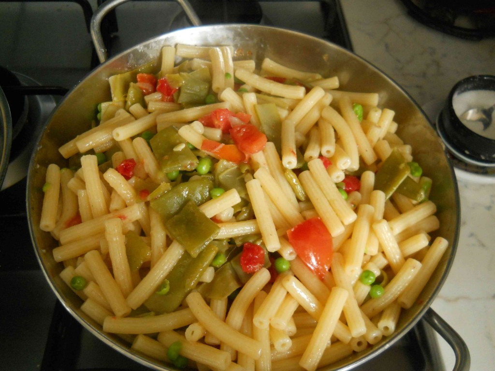

Ricette Lasagne - Le ricette di GialloZafferano Raccolta di ricette facili per primi piatti, secondi, dolci e dessert su Mangiare Bene. Ricette regiornali o internazionali, ricette per bambini, e in più ogni settimana Marina propone un nuovo menù
Ricette di cucina - Le ricette della Cucina Imperfetta Ricette Pasta. PORTATE FILTRA. Spaghetti alla Carbonara. 970 4,2 La ricetta degli spaghetti alla carbonara è tipica del Lazio ed è apprezzata in tutto il mondo grazie alla sua semplicità, facilità e bontà! Facile 25 min Kcal 680 LEGGI RICETTA. Spaghetti all'Amatriciana. 359 ...
Casatiello Con le ricette di pasta ci si può davvero sbizzarrire in quanto dagli ingredienti di mare a quelli di terra la pasta è veramente abbinabile con qualsiasi tipo di sugo o condimento. La pasta può essere cotta in vari modi al forno, al tegamino, bollita e in alcuni casi persino alla piastra, ad ogni tipo la propria ricetta.
DMFood: ricette, menu di cucina e alimenti funzionali ... Tutte le ricette scritte della trasmissione La Prova del Cuoco con gli ingredienti, procedimento e video delle ricette più buone proposte da Anna Moroni, Sergio Barzetti, Luisanna Messeri e Natalia Cattelani
Le ricette di Marianna Pascarella su RicetteDalMondo.it Tante ricette di cucina con foto facili da preparare per chiunque .Le ricette del mio blog di cucina sono spiegate passo passo e le foto dei passaggi le rendono ancora pi facili da preparare.
Le ricette della Prova del Cuoco ed É sempre mezzogiorno Entra nella community, salva le tue ricette preferite e vota quelle che ti piacciono di più! Inserisci i tuoi dati. Nome e cognome. Username. Email. Password. Numero di telefono. Accetto i Termini di utilizzo di Chef in Camicia e confermo di aver letto la Informativa sulla privacy.
Ricette di cucina, community, libri di ricette e libri di ... Tutte le ricette di cucina di Dissapore: dagli antipasti ai dolci, primi e secondi piatti di carne, di pesce e vegetariani / vegani, passando per preparazioni di pasta, pizza e pane, scopri le migliori ricette divise per categoria.. Scopri idee per colazione, antipasti, primi e secondi piatti, contorni, dolci, ricette dal mondo, tantissime ricette facili da preparare per ogni occasione: pranzi ...
ricettedelcuore Cook è il mensile di cucina del Corriere della Sera. News, ricette, inchieste, personaggi e tante curiosità legate al mondo del cibo.
Pasta - Le ricette di GialloZafferano Buonissimo, ricette di cucina facili, veloci e spiegate passo passo. Nella sezione magazine trovi inoltre benessere, sagre, articoli di cucina e molto altro. Scopri Buonissimo.
Le Ricette di Cucina di Mangiarebene | Mangiare Bene
2021.04.14 01:07

Iscriviti alla newsletter RICETTE MENU BLOG GRANDI CUOCHI Iscriviti alla newsletter RICETTE MENU BLOG GRANDI CUOCHI
Cucina internazionale
La cucina indiana
un gran ventaglio di sapori e profumi straordinari
RICETTE STAGIONE
Ricette veloci primavera
Pronte in 15 minuti
Scopri di più
Ricette
Torta di pere rovesciata
Soffice e facile da eseguire
Scopri di più
Ricette
Carciofi alla griglia
Sublimi!
Scopri di più
Ricette
Primavera vegan
Gustose ricette di primavera
Scopri di più
Ricette
Verdure ripiene
Scopri di più
Ricette
Ricette di Ricotta
Scopri di più
Segreti di Marina
Avanzi di Colomba come trasformarli in golosi dessert
Scopri di più
Segreti di Marina
Uova di cioccolato: come riutilizzare quelle avanzate
Scopri di più
Ricette di Minestre, Passati, Vellutate e Zuppe
Pappa al pomodoro
Ricette Pollo e Pollame vario
Involtini di pollo
Antipasti a base di verdure e vari
Polpette di melanzane
Ricette di Torte, Cake, Crostate, Pani dolci
Una sottilissima sfogliata di mele
Le Ricette di Mangiarebene
Ricette di antipasti Ricette di pasta Ricette di riso Ricette di altri primi Ricette di carne Ricette di pesce Ricette di Uova Ricette di contorni Ricette di Salse Ricette di dessert Ricette di drink Ricette di spuntini Ricette di conserve
I menu di cucina di Mangiarebene
Ricette di stagione Le occasioni speciali Le feste tradizionali
Le ultime Ricette
Patate novelle al cartoccio Raviole di san Giuseppe Carbonara scarpetta Torta di pere rovesciata Banitsa di spinaci - Banitsa Spanach Sformato di spinaci con polpette di carne Kozunac Curry di lenticchie - Dal Pollo Vindaloo - Vindaloo chicken Chapati
Il blog di Mangiarebene
Amarcord Cucina afrodisiaca Cucina Internazionale Cucina rapida & economica Cucina Regionale Eventi Golosi Il libro è servito I segreti di Marina Latte di Gallina Magazine Quisquilie & pinzillacchere Ricette da cinema Scrivi a Marina Privacy Cookie